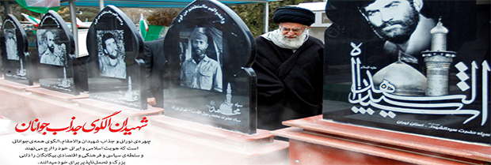

بنیاد شهید در یک نگاه

بنیاد شهید و امور ایثارگران بنیادی دولتی در ایران است که مسئولیت رسیدگی به امور ایثارگران و خانواده های شهدا را بر عهده دارد. این نهاد دارای شخصیت حقوقی و استقلال مالی و اداری است و امور آن طبق مقررات و قوانین مربوط به نهادهای عمومی غیر دولتی و در چهارچوب اساسنامه مصوبه و آیین نامه های مربوط زیر نظر رییس جمهور و نظارت عالیه مقام معظم رهبری اداره می شود. ریاست بنیاد با حکم رهبری، در مقام نماینده ولی فقیه و با حکم ریاست جمهوری در مقام رییس بنیاد به مدت ۴ سال منصوب میشود.
وظایف بنیاد
- احیاء، حفظ و ترویج فرهنگ شهادت در جامعه
- زنده نگهداشتن یاد و نام شهیدان انقلاب اسلامی و حفظ آثار آنها
- تجلیل، تکریم ، صیانت و حمایت از خانوادههای معظم شاهد
- تلاش برای استفاده از امکانات عمومی جامعه و نظام و نیز بهرهگیری از سرمایه و دارایی بنیاد برای رشد و اعتلای مادی و معنوی خانوادههایمعظم شاهد
- شناسایی و تقویت و ترویج عوامل و موجبات رشد و توسعه فرهنگ شهادتطلبی
- برگزاری مراسم یادبود با الهام از مکتب عاشورای حسینی و بااستفاده از مناسبتهای ملی و مذهبی.